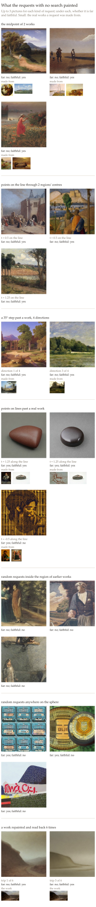

Q9 Can we get far and faithful pictures with no search?
We now have a rule for far and a test for faithful (Q7), and a decoder that paints a CLIP vector (Q8). A search is one way to choose which vectors to paint. Do we need one, or can we work out requests from the earlier works and paint those?
The Data pages give us no formula for where art went next. The later works vary along directions the earlier ones barely used (Q2). The lumps (centres of groups of works that point the same way) fitted on the earlier works explain less of them than of the earlier works themselves (Q5). And around the late nineteenth century, the corpus’s move over one 40-year window says little about its move over the next.12
So we painted simple requests (midpoints of 2 works, steps past a work, lines past a real work, random points and the like) with no search, and read every picture with the same 2 measures as the search’s pictures: far against the reference, and faithful against its request (Figure 1, Figure 2).
![Eight rows, one per kind of request with no search. Each row has a drawn sketch and measured points: across, the request's angle from where it starts; up, the angle between the request and the reading of its picture; a dashed faithful line at 45.8 degrees; far pictures in red. Pictures, far, and far and faithful: midpoints of 2 works 48, 0, 0; points on the line through 2 regions' centres 36, 0, 0; 35 degree steps past a work 480, 3, 0; lines past a real work or toward the sparse edge 450, 12, 6; random requests inside the region of earlier works 192, 0, 0; random requests anywhere on the sphere 64, 15, 0; a work repainted and read back 6 times 48, 4, faithful not counted; lines toward a real later work 71, 20, 20.](figures/no_search_geometry_v4.svg)
![Eight scatter panels, one per kind of request with no search, laid out as Q7's. Each corner prints its percent of the kind's pictures (far and faithful, far and not faithful, near and faithful, near and not faithful): the midpoint of 2 works (48): 0%, 0%, 96%, 4.2%; points on the line through 2 regions' centres (36): 0%, 0%, 100%, 0%; a 35° step past a work, 4 directions (480): 0%, 0.6%, 47%, 52%; points on lines past a real work, or toward the sparse edge (450): 1.3%, 1.3%, 66%, 32%; random requests inside the region of earlier works (192): 0%, 0%, 0%, 100%; random requests anywhere on the sphere (64): 0%, 23%, 0%, 77%; a work repainted and read back 6 times (48): far 8.3%, near 92%, faithful not counted; points on lines toward a real later work (71): 28%, 0%, 66%, 5.6%.](figures/four_cells_no_search_v5.svg)

So, with no search, the 6 kinds of request almost never give a picture that is far and faithful, unlike requests read from noise images. Of the pictures the 6 kinds paint (the first 6 rows of Figure 1), 0.5% are far and faithful, and those few lie on lines past real works. Of the pictures painted from requests read from noise images (i.e., we hand the decoder CLIP’s reading of a noise or plain image), 20% are (Q7). Requests between or near the works before 1900 nearly all come back as the past repainted (Figure 3). Random points inside the region of the works before 1900 never come back faithful.
Why does a midpoint of 2 works not land far? A midpoint is the average of 2 works’ vectors, brought back to unit length. Averaging pulls it toward the middle of the corpus, 34 degrees from its centre against 42 for a real work, and it sits as close to its neighbours as a real work does. So the decoder paints it as a typical picture from before 1900: the median score of the 48 midpoints is 0.65 in DINOv3, where the bar is 0.96.3
We also notice that a 35 degree step past a work seldom lands far, and more than half of its pictures are not faithful. Random requests anywhere on the sphere are never faithful, so their far pictures say nothing of the places asked for. And works repainted and read back, with no step at all, drift: by the sixth round trip a few are far.4
Lines aimed at a real later work do give far and faithful pictures. We drew 9 lines from the 3 starts of the free search (the search left to the score alone, Q10) toward 7 works of 1900 to 1969 whose own repaintings are far and faithful. Of the 9, 5 gave some far and faithful pictures, most of them near the target or past it.5 Halfway along such a line, at 30 degrees, 2 of 9 pictures are far and faithful, and nearer the start none of 18.
So simple requests almost never give far and faithful pictures, except on lines to works we already know and from requests read from noise images. Q10 builds a search that has to find them without knowing those works.
Footnotes
A basis from before 1900 keeps about 9 points less of the later works than a random basis does (Q2). Up to 3 lumps fitted on the earlier works explain about a fifth of a later work against a third of an earlier one (Q5).↩︎
For 2 consecutive 40-year windows we take the cosine, without sign, between the corpus’s move over one and its move over the next (Q2, CLIP). Its median over pairs that do not overlap is about 0.40. For the pairs that pivot on the late nineteenth century it runs 0.16 to 0.31. Its two lowest, 0.16 and 0.17, share 30 of their 40 years and count as one observation. For moves 60 or more years apart the median is 0.09.↩︎
The 2 works of a midpoint are drawn at random from 2 different regions of the reference, and sit 44 to 76 degrees apart, about as far as any 2 works before 1900. No midpoint scores over the bar in either observer; the highest sits at the 98th percentile of the reference’s own scores. We have not painted a midpoint of 2 far pictures.↩︎
The round trips are not in the 0.5% (6 of 1,270 pictures). They are a chain of repaintings of one work rather than requests made once, and for them we counted only whether each trip’s picture is far (4 of 48 at the sixth trip, Q12).↩︎
Along each line we painted requests at 10 to 70 degrees and one at the target itself, which sits 59.4 to 61.9 degrees from its start: 71 pictures on the 9 lines, as on one line the target sits at 60 degrees. Of the 20 far and faithful pictures, 16 were asked 50 degrees or more, which is within about 11 degrees of their target or past it.↩︎